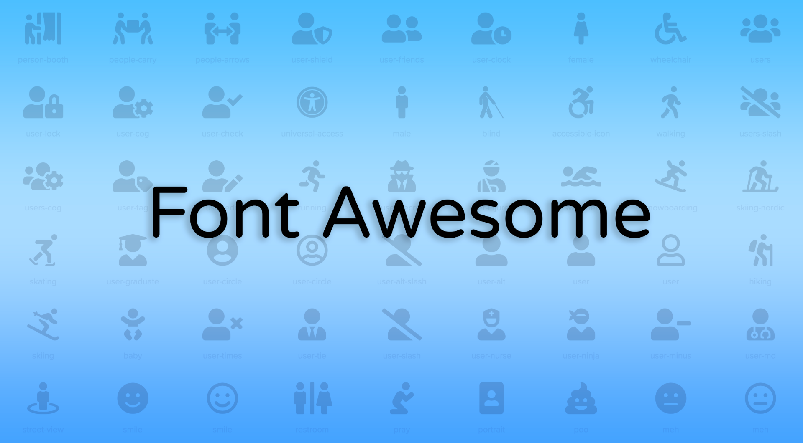
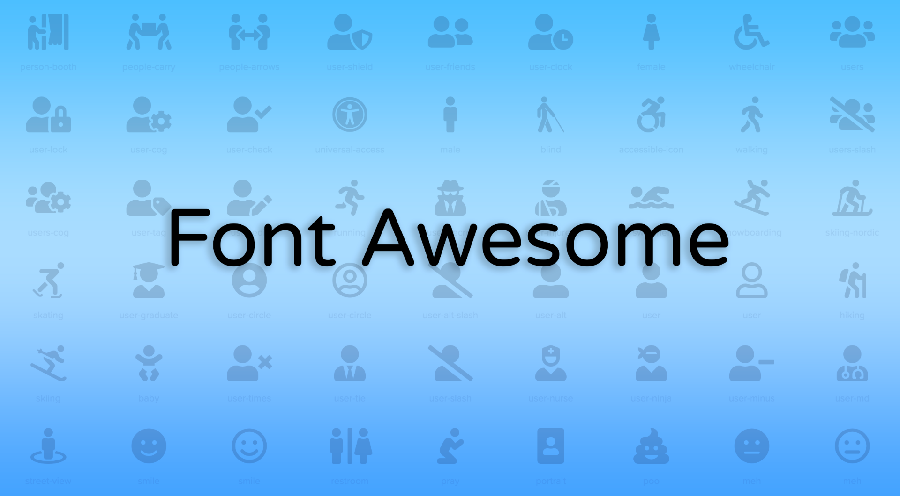
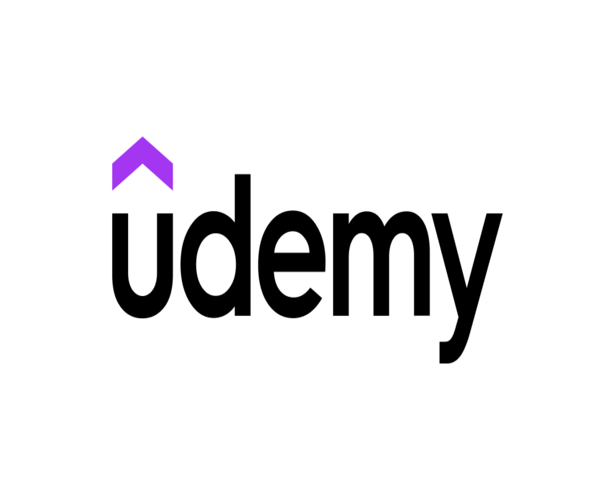
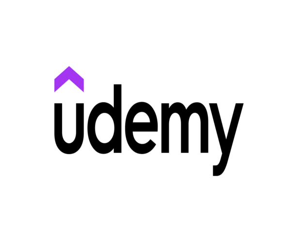
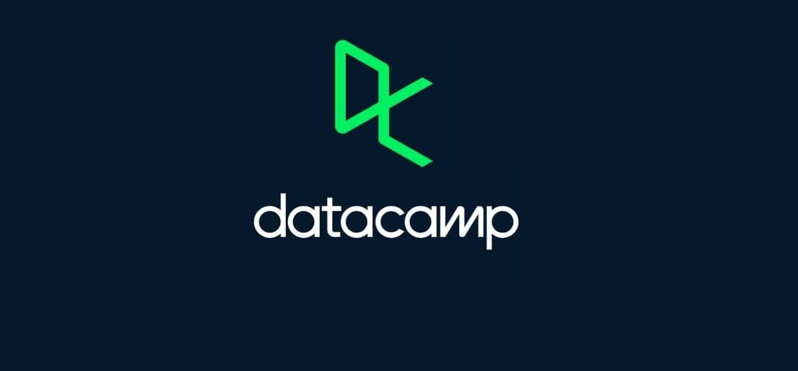
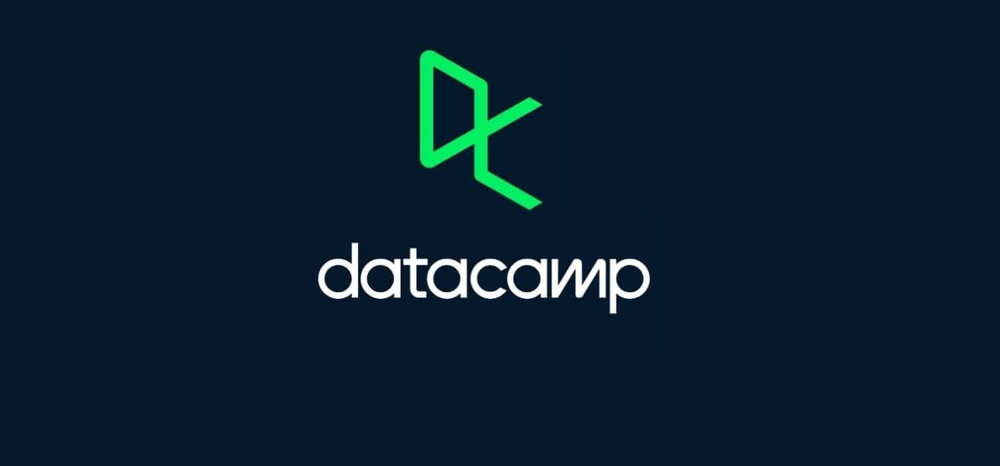

 

 

آیا ChatGPT پایان کدنویسی خواهد بود ؟
اگر شما یک برنامه نویس یا مهندس نرم افزار هستید، به احتمال زیاد مجذوب قابلیت های ChatGPT، مدل مکالمه ای که توسط OpenAI ساخته شده است، شده اید. ChatGPT از زمان انتشار در نوامبر 2022 به خودی خود به یک پدیده تبدیل شده است و تعداد کاربران آن به میلیون ها نفر می رسد. ChatGPT بر اساس مدل زبان GPT-3 است که همچنین اختصاصی OpenAI است.بیش از 175 میلیون پارامتر دارد و با حجم زیادی از متن آموزش داده شده است که به آن توانایی های تولیدی زیادی می دهد. ... با این حال، یکی از جذاب ترین جنبه ها توانایی آن در نوشتن کد بوده است. فقط بگو او آنچه را که می خواهید انجام دهد و او می تواند هر چیزی را بسازد از صفحات وب گرفته تا برنامه ها یا حتی بازی ها. بعضی از زبانهایی که ChatGPT استاد آن هستند پایتون، سی و جاوا اسکریپت هستند، به طور گسترده در محیط های توسعه استفاده می شود. همانطور که اغلب در این موارد اتفاق می افتد، وجود دارد کسانی که این را به عنوان یک ابزار پشتیبانی عالی می بینند، متشکرم به صرفه جویی در زمان مربوطه از سوی دیگر، هر چه بیشتر فاجعه بارها معتقدند که ChatGPT می تواند "حذف" کند شکل کلاسیک برنامه نویس برخلاف آنچه که در مورد تصویرسازان و هنرمندان اتفاق می افتد، نوشتن خلاق تر به نظر می رسد که بخش به راحتی نفس می کشد (در حال حاضر). رمان نویسان، کپی رایترها و روزنامه نگاران به ChatGPT اشاره کرده اند هنوز در مرحله "نگران کننده" نیست. نتایجی که چت بات OpenAI تولیدات بسیاری از جنبه های کلیدی را در نظر نمی گیرند به نثر خوب: شخصیت کم، مستعد خطاهای واقعی و با هیچ هدف آشکاری وجود ندارد که بتواند احساسات را منتقل کند. با برنامه نویسی فرق میکنه تنها چیزی که اهمیت دارد این است که کد بر اساس خواسته و مورد نیاز کار می کند، نه بیشتر. اثربخشی بر هر چیز دیگری ارجحیت دارد، چیزی منطقی اگر در نظر بگیریم که جنبه فنی زمانی بسیار مهم است به برنامه نویسی می رسد با این حال، فکر نکنید که ChatGPT در حال اجراست برای تبدیل مهندسان و برنامه نویسان به خاکستر. برای شروع، ChatGPT فقط قادر به ایجاد برنامه های بسیار ساده است. در واقع، اگر شما چیزی خیلی پیچیده بخواهید، چت بات مؤدبانه برای شما ارسال می کند برای سرخ کردن مارچوبه. بنابراین، در حال حاضر ChatGPT بیشتر ارائه می شود به عنوان دستیار هنگام برنامه نویسی با این حال، این به این معنی نیست نمی تواند برای ارائه خدمات بهتر تکامل یابد. بنابراین، ChatGPT واقعاً چه می تواند امروز یک برنامه نویس پیشنهاد می کنید؟ به نظر می رسد بسیاری از متخصصان صنعت با این موضوع موافق هستند در یک چیز: این یک ابزار بسیار ارزشمند است. با تشکر از ChatGPT، شما می توانید چارچوب ها و نسخه های پیش نمایش "پیچیده" را ایجاد کنید برنامه های کاربردی. به عبارت دیگر، می تواند زمینه ای را برای زمان های توسعه سریعتر ایجاد کند. درباره هوش مصنوعی اغلب با ترس و تحسین صحبت می شود. آیا ایجاد اشتغال خواهد کرد؟ آیا آن چیزی را که از قبل می دانیم از بین خواهد برد؟ در حالی که ChatGPT سرعت تکمیل وظایف را افزایش می دهد، این یک واقعیت است که نیازها و مشاغل جدید را نیز ایجاد خواهد کرد. این شامل "مهندس سریع" یا همان چیزی است که بسیار مورد انتقاد قرار گرفته است: دستورالعمل هایی را به مدل های مولد می دهد تا بیشترین بهره را از آنها ببرید. اگر می خواهید راحت باشید، در حال حاضر این فناوری بعید است برای جایگزینی هر چیزی که در مورد کدنویسی و مهندسی آموخته اید. دانش شما هنوز بسیار ضروری است، حتی اگر نحوه استفاده خود را تغییر دهید برای انجام کار خود در پایان، همه کسانی که قادر به گرفتن این فناوری و استفاده از آن به نفع خود رونق خواهد گرفت.
آیا جی کوئری مرده است؟
به نظر می رسد که jQuery مرده است یا خیر
موضوع داغ برای مردم در دنیای کدنویسی.
بنابراین، تصمیم گرفتم خودم آن را کشف کنم.
وقتی برای اولین بار شروع به یادگیری جاوا اسکریپت کردم،
من jQuery را یاد گرفتم پس وقتی فهمیدم این بود
در کاهش، کمی شگفت زده شدم.
 برای درک اینکه چه اتفاقی برای jQuery افتاده است، باید
برای درک اینکه جی کوئری چیست. جی کوئری یک جاوا اسکریپت است
کتابخانه ای با ویژگی های بسیار که برای پویا ساختن وب سایت ها ساخته شده است.
دارای مدیریت رویداد، انیمیشن، پیمایش DOM و موارد دیگر است.
کاری که jQuery در ابتدای ایجاد آن انجام داد، آسانتر کردن AJAX بود
و به مردم اجازه داد تا به راحتی به آن دسترسی داشته باشند.
...
این به نظر می رسد چیزی است که ما امروز در جاوا اسکریپت انجام می دهیم، و دلیل آن این است.
JQuery شبیه به واکنش در جایی است که جاوا اسکریپت را خراب کرده است
کدگذاری به بلوک های قابل هضم چیزی که جی کوئری را خاص می کرد این بود که راه هایی داشت
این امر باعث میشود که مدیریت AJAX و رویداد برای کدنویسها قبل از بسیاری دیگر آسانتر شود
کتابخانه ها انجام دادند. بنابراین، jQuery خیلی زود وارد بازی شد و کار جدیدی انجام داد، که این همان چیزی است
که باعث محبوبیت آن شد.
یکی دیگر از مواردی که جی کوئری را محبوب کرد این بود
چارچوبها و کتابخانهها از آن استخراج شدهاند، یکی از نمونههای معروف Bootstrap است.
بوت استرپ به خوبی نشان می دهد که چه اتفاقی برای جی کوئری افتاده است
jQuery به عنوان یک وابستگی در نسخه جدید.
JQuery مفید است، اما چیزی که باعث مرگ آن شد، استفاده گسترده از آن بود.
جاوا اسکریپت Vanilla به روز می شود تا چیزهایی که جی کوئری را ساخته اند
خاص چیزهایی شد که در جاوا اسکریپت بدون جی کوئری پیدا کردید.
بنابراین، شروع به منسوخ شدن کرد. React چارچوبی است که بسیاری از آنها هستند
اکنون به جای jQuery استفاده کنید زیرا کار سازماندهی را انجام می دهد
کد را در بلوک های قابل اجرا ایجاد می کند، اما همچنین دارای عملکرد اضافی است
در جاوا اسکریپت وانیلی موجود نیست. هنوز هم چیز خاصی در موردش دارد.
همانطور که زبان ها به روز می شوند و تکامل می یابند، چارچوب ها و کتابخانه های خاصی باید دوباره کار شوند
یا پشت سر گذاشته شود زیرا فناوری به سرعت حرکت می کند. JQuery یک مثال کامل است
از اتفاقاتی که برای کتابخانه ای می افتد که با گذشت زمان به اندازه کافی تغییر نمی کند.
بنابراین، آیا جی کوئری مرده است؟ هنوز هم در مواردی مانند وردپرس استفاده می شود، یعنی
هنوز هم به طور گسترده استفاده می شود. اما داره میمیره به عنوان چارچوب و کتابخانه های دیگر
jQuery را به عنوان یک وابستگی رها کنید، به آرامی خواهد شد
کمتر و کمتر استفاده می شود تا زمانی که اصلاً مورد نیاز نباشد.
برای درک اینکه چه اتفاقی برای jQuery افتاده است، باید
برای درک اینکه جی کوئری چیست. جی کوئری یک جاوا اسکریپت است
کتابخانه ای با ویژگی های بسیار که برای پویا ساختن وب سایت ها ساخته شده است.
دارای مدیریت رویداد، انیمیشن، پیمایش DOM و موارد دیگر است.
کاری که jQuery در ابتدای ایجاد آن انجام داد، آسانتر کردن AJAX بود
و به مردم اجازه داد تا به راحتی به آن دسترسی داشته باشند.
...
این به نظر می رسد چیزی است که ما امروز در جاوا اسکریپت انجام می دهیم، و دلیل آن این است.
JQuery شبیه به واکنش در جایی است که جاوا اسکریپت را خراب کرده است
کدگذاری به بلوک های قابل هضم چیزی که جی کوئری را خاص می کرد این بود که راه هایی داشت
این امر باعث میشود که مدیریت AJAX و رویداد برای کدنویسها قبل از بسیاری دیگر آسانتر شود
کتابخانه ها انجام دادند. بنابراین، jQuery خیلی زود وارد بازی شد و کار جدیدی انجام داد، که این همان چیزی است
که باعث محبوبیت آن شد.
یکی دیگر از مواردی که جی کوئری را محبوب کرد این بود
چارچوبها و کتابخانهها از آن استخراج شدهاند، یکی از نمونههای معروف Bootstrap است.
بوت استرپ به خوبی نشان می دهد که چه اتفاقی برای جی کوئری افتاده است
jQuery به عنوان یک وابستگی در نسخه جدید.
JQuery مفید است، اما چیزی که باعث مرگ آن شد، استفاده گسترده از آن بود.
جاوا اسکریپت Vanilla به روز می شود تا چیزهایی که جی کوئری را ساخته اند
خاص چیزهایی شد که در جاوا اسکریپت بدون جی کوئری پیدا کردید.
بنابراین، شروع به منسوخ شدن کرد. React چارچوبی است که بسیاری از آنها هستند
اکنون به جای jQuery استفاده کنید زیرا کار سازماندهی را انجام می دهد
کد را در بلوک های قابل اجرا ایجاد می کند، اما همچنین دارای عملکرد اضافی است
در جاوا اسکریپت وانیلی موجود نیست. هنوز هم چیز خاصی در موردش دارد.
همانطور که زبان ها به روز می شوند و تکامل می یابند، چارچوب ها و کتابخانه های خاصی باید دوباره کار شوند
یا پشت سر گذاشته شود زیرا فناوری به سرعت حرکت می کند. JQuery یک مثال کامل است
از اتفاقاتی که برای کتابخانه ای می افتد که با گذشت زمان به اندازه کافی تغییر نمی کند.
بنابراین، آیا جی کوئری مرده است؟ هنوز هم در مواردی مانند وردپرس استفاده می شود، یعنی
هنوز هم به طور گسترده استفاده می شود. اما داره میمیره به عنوان چارچوب و کتابخانه های دیگر
jQuery را به عنوان یک وابستگی رها کنید، به آرامی خواهد شد
کمتر و کمتر استفاده می شود تا زمانی که اصلاً مورد نیاز نباشد.